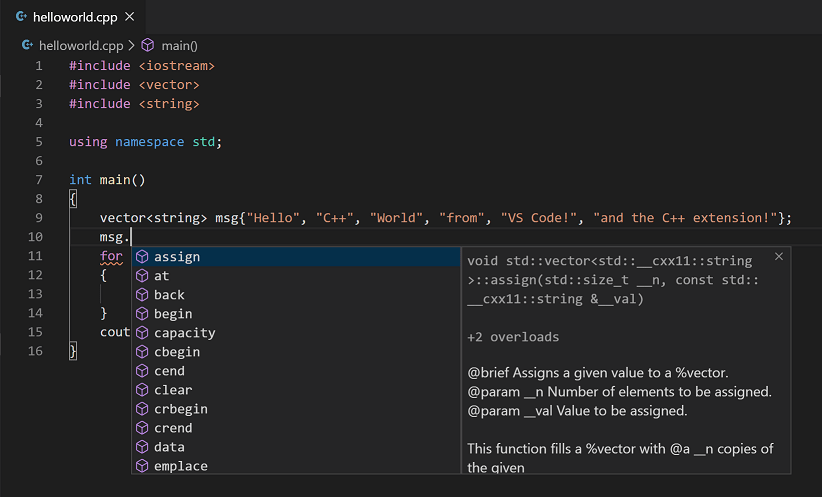
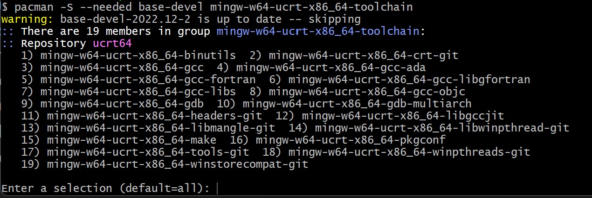
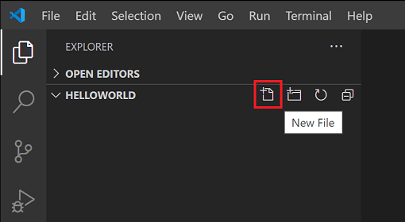
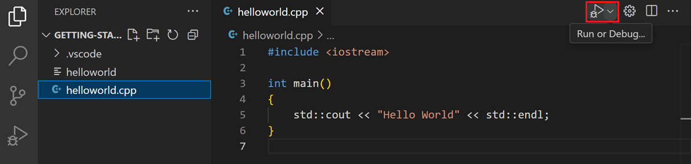
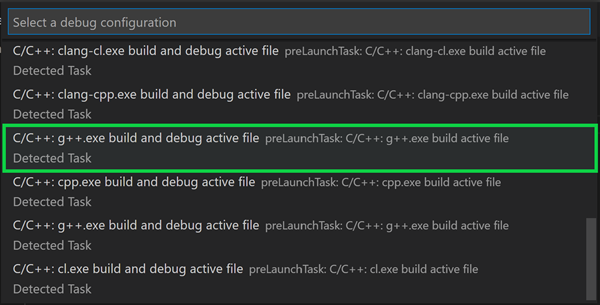
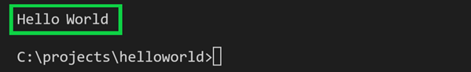
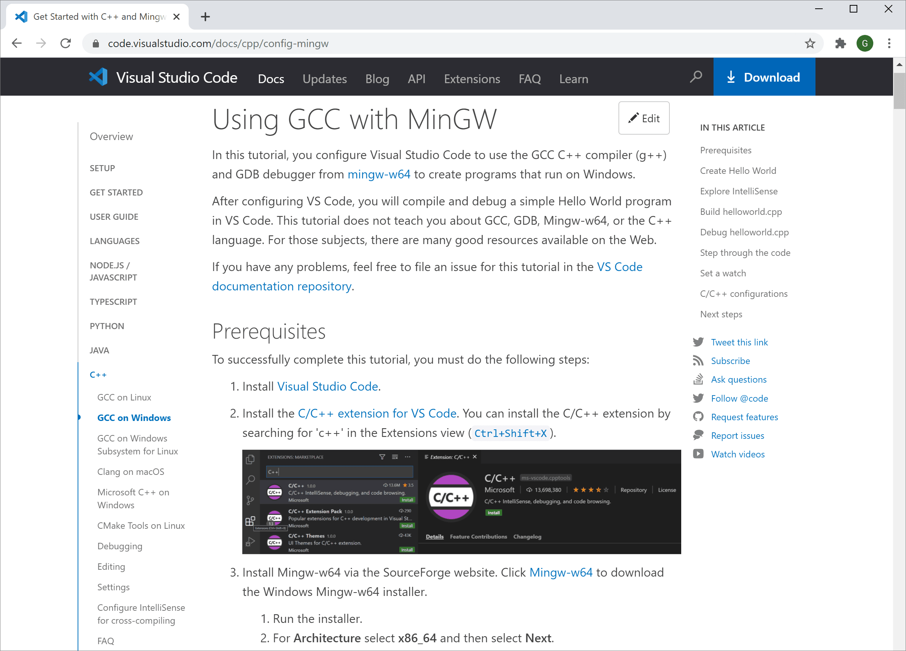

Visual Studio Code 中的 C/C++
Visual Studio Code 的 C/C++ 支持由 Microsoft C/C++ 扩展提供，可在 Windows、Linux 和 macOS 上进行跨平台的 C 和 C++ 开发。当你创建 *.cpp 文件时，扩展会添加语法高亮（着色）、智能补全和悬停提示（IntelliSense）以及错误检查等功能。

安装扩展
- 打开 VS Code。
- 选择活动栏上的扩展视图图标，或使用键盘快捷键 (
kb(workbench.view.extensions))。 - 搜索
'C++'。 - 选择 安装。

设置 C++ 环境
C++ 是一种编译型语言，这意味着程序的源代码需要经过翻译（编译）才能在计算机上运行。C/C++ 扩展本身不包含 C++ 编译器或调试器，因为作为编辑器，VS Code 依赖命令行工具来完成开发工作流。你需要安装这些工具，或使用计算机上已安装的工具。
检查是否已安装编译器
注意：你的学术或工作开发环境可能已经提供了 C++ 编译器和调试器。请咨询你的导师或同事，了解如何安装推荐的 C++ 工具集（编译器、调试器、项目系统、代码检查器）。
一些平台上已预装的常见编译器包括 Linux 上的 GNU 编译器套件 (GCC) 以及 macOS 上随 Xcode 提供的 Clang 工具。
要检查是否已安装它们：
- 使用 (
kb(workbench.action.terminal.new)) 打开一个新的 VS Code 终端窗口 - 使用以下命令检查 GCC 编译器
g++：g++ --version
或使用以下命令检查 Clang 编译器 clang：
clang --version输出应显示编译器版本和详细信息。如果两者都未找到，请确保编译器可执行文件位于你的平台路径中（Windows 上为 %PATH，Linux 和 macOS 上为 $PATH），以便 C/C++ 扩展能够找到它。否则，请使用下面小节的说明来安装编译器。
安装编译器
如果没有安装编译器，可以参考以下安装教程之一：
Windows：
Linux：
macOS：
注意：如果你更倾向于使用功能完备的集成开发环境 (IDE)，并且希望内置编译、调试和项目模板（文件 > 新建项目），市面上有很多选择，例如 Visual Studio Community 版本。
示例：在 Windows 上安装 MinGW-x64
为了理解这个过程，我们来通过 MSYS2 安装 Mingw-w64。Mingw-w64 是一个流行且免费的 Windows 工具集。它提供 GCC、Mingw-w64 以及其他有用的 C++ 工具和库的最新原生构建。
- 使用此 MinGW 安装程序直链下载。
- 运行安装程序并按照安装向导的步骤操作。请注意，MSYS2 需要 64 位 Windows 8.1 或更高版本。
- 在向导中，选择你想要的安装文件夹。记下此目录以供后续使用。在大多数情况下，推荐的目录是可以接受的。当进入到设置开始菜单快捷方式的步骤时也是如此。完成后，确保勾选 立即运行 MSYS2 复选框，然后选择 完成。一个 MSYS2 终端窗口将自动打开。
- 在此终端中，运行以下命令安装 MinGW-w64 工具链：
pacman -S --needed base-devel mingw-w64-ucrt-x86_64-toolchain - 将显示可用软件包列表

- 按
kbstyle(Enter)接受toolchain组中的默认软件包数量。 - 当提示是否继续安装时，输入
Y。 - 通过以下步骤将 MinGW-w64 的
bin文件夹路径添加到 Windows 的PATH环境变量中：- 在 Windows 搜索栏中，键入 设置 以打开 Windows 设置。
- 搜索 编辑账户的环境变量。
- 在 用户变量 中，选择
Path变量，然后选择 编辑。 - 选择 新建，然后将安装过程中你记录的 MinGW-w64 目标文件夹添加到列表中。如果你选择了默认安装步骤，路径为：
C:\msys64\ucrt64\bin。 - 选择 确定，然后在 环境变量 窗口中再次选择 确定 以更新
PATH环境变量。
- 在 Windows 搜索栏中，键入 设置 以打开 Windows 设置。
你需要重新打开所有控制台窗口，才能使更新后的 PATH 环境变量生效。
- 要检查 MinGW-w64 工具是否已正确安装且可用，请打开一个新的命令提示符并输入：
gcc --version g++ --version gdb --version
你应该看到输出显示你所安装的 GCC、g++ 和 GDB 的版本。如果情况并非如此，请确保你的 PATH 条目与编译器工具所在的 Mingw-w64 二进制文件位置匹配，或参考故障排除部分。
创建一个 Hello World 应用
为确保编译器安装和配置正确，我们来创建一个 Hello World C++ 程序。
创建 C++ 文件
- 在 Windows 上，启动 Windows 命令提示符（在 Windows 搜索栏中输入 Windows 命令提示符）。在 macOS 和 Linux 上，你可以在终端中输入这些命令。
- 运行以下命令。它们会创建一个名为
projects的空文件夹，你可以在其中放置所有 VS Code 项目。接下来的命令会创建一个名为helloworld的子文件夹并导航到其中，然后使用code命令直接在 VS Code 中打开helloworld。mkdir projects cd projects mkdir helloworld cd helloworld code .
"code ." 命令会在当前工作文件夹中打开 VS Code，该文件夹将成为你的"工作区"。通过选择 是的，我信任此作者 来接受工作区信任对话框，因为这是你创建的文件夹。
- 现在，使用文件资源管理器中的 新建文件 按钮或 文件 > 新建文件 命令创建一个名为
helloworld.cpp的新文件。

添加 Hello World 源代码
粘贴以下源代码：
#include <iostream>
int main()
{
std::cout << "Hello World" << std::endl;
}现在按 kb(workbench.action.files.save) 保存文件。你还可以通过选中主 文件 菜单中的 自动保存 来启用 AutoSave，自动保存文件更改。
运行 helloworld.cpp
- 确保已打开
helloworld.cpp，使其成为编辑器中的活动文件。 - 按编辑器右上角的播放按钮。

- 从系统上检测到的编译器列表中选择 C/C++: g++.exe 生成和调试活动文件。

你仅在第一次运行 helloworld.cpp 时才会被提示选择编译器。此编译器将成为 tasks.json 文件中设置的"默认"编译器。
- 构建成功后，你应该会在集成终端中看到 "Hello World" 输出。

恭喜！你刚刚在 VS Code 中运行了你的第一个 C++ 程序！下一步是通过下一节的教程之一，进一步了解 Microsoft C/C++ 扩展的语言功能，如 IntelliSense、代码导航、构建配置和调试。
教程
通过适用于你的环境的教程开始使用 C++ 和 VS Code：
- Windows 上的 GCC（通过 MinGW）
- Windows 上的 Microsoft C++
- Linux 上的 GCC
- 适用于 Linux 的 Windows 子系统上的 GCC
- macOS 上的 Clang/LLVM
- Linux 上的 CMake 工具
文档
你可以在 VS Code 网站的 C++ 部分下找到更多关于使用 Microsoft C/C++ 扩展的文档，其中包括以下文章：

远程开发
VS Code 和 C++ 扩展支持远程开发，允许你通过 SSH 在远程计算机或虚拟机上工作、在 Docker 容器内工作，或在 Windows Subsystem for Linux (WSL) 中工作。
要安装远程开发支持：
- 安装 VS Code 远程开发扩展包。
- 如果远程源文件托管在 WSL 中，请使用 WSL 扩展。
- 如果你通过 SSH 连接到远程计算机，请使用 Remote - SSH 扩展。
- 如果远程源文件托管在容器中（例如 Docker），请使用 Dev Containers 扩展。
使用 AI 增强补全
GitHub Copilot 是一款 AI 驱动的代码补全工具，可帮助你更快、更智能地编写代码。你可以在 VS Code 中使用 GitHub Copilot 扩展来生成代码，或从它生成的代码中学习。

GitHub Copilot 为众多语言和各种框架提供建议，特别适用于 Python、JavaScript、TypeScript、Ruby、Go、C# 和 C++。
你可以在 Copilot 文档中了解更多关于如何开始使用 Copilot 的信息。
反馈
如果你遇到任何问题或对 Microsoft C/C++ 扩展有建议，请在 GitHub 上提交问题和建议。如果你尚未提供反馈，可以参与此快速调查。